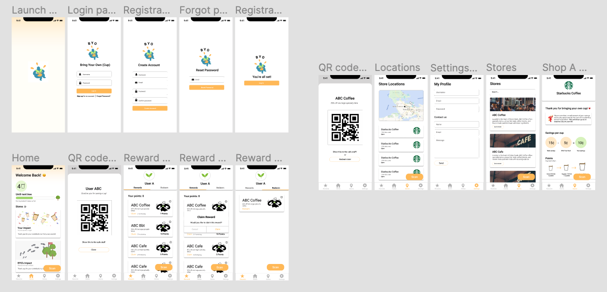
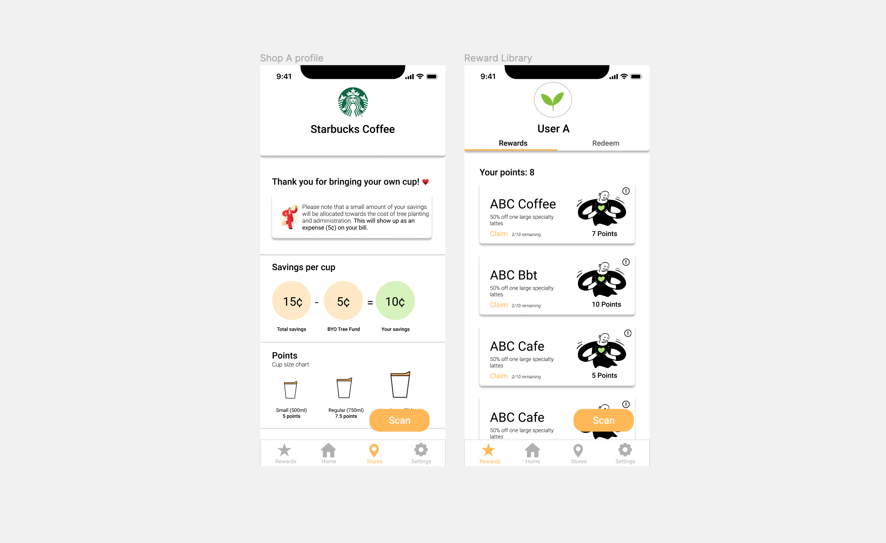

Problem space
Every minute, Vancouver throws out an average of 258 disposable cups amounting to over 130 million cups annually. BYO is a mobile app-based program where customers who bring their own cups tolocal cafes can collect points towards rewards while contributing to global reforestation efforts by allocating a part of their usual discount to tree planting.
Target audience
Metro Vancouverites who sometimes / often buy to-go drinks and are interested in taking small steps towards sustainability.
User goals
- Customers can track and amplify their collective environmental action, achieving a sense of personal
accomplishment
- Join the reuse movement, achieving a sense of community and collective action
- Take advantage of discounts and free rewards
- Building a sustainability-centered network
Process
1. Style guide
I kickstarted my design process by creating a style guide for future designers to reference from. Despite being the only UX/ UI designer on the team, it was important for me to not only verbally, but visually present my ideas to the team in weekly check-ins. I chose an orange color palette for the first iteration to reflect BYO's fresh and innovative ethos.

2. User flowchart
At first glance, it was a little bit confusing to grasp the concept of having to claim the reward first in order to redeem it afterwards by using the scan button. As the BYO app is a reward based application, it was especially important for my team, including back-end developers to clearly understand the reward-claiming process. In order to create a more feasible and improve user flowchart, I hope to create personas and implement user testing in the second iteration of the app.
Users must claim the reward before being able to scan and redeem it in-stores. Once a reward is claimed, it can be used later at the user's convenience. Claiming the reward in advance prevents users from missing the reward, as each store only has a limited amount of promotions.

3. Low-fidelity mockup
For the first prototype, I focused on implementing the important features, exploring some layout structures and selecting a colour palette for the app.

4. High-fidelity mockup
For the second prototype, I focused on creating a more sophisticated design while considering some important UX aspects. The third prototype is still a work in progress and the app will launch after re-iterating a workable prototype.

5. Layout explorations
Brainstorming the layout of the home screen was the most challenging part of this project. My team wanted to put emphasis on displaying the user's meaningful impact on reducing waste through graphics. Although this is still a work-in-progress, my team will continue to explore different ways to emphasize the feeling of personal accomplishment from reducing disposable cup waste through visual representations.

Key features
Some of the key features include the floating scan button which is accessible on every page of the app as well as the rewards page which allows users to redeem or claim points.

Challenges
Another challenge was trying to figure out the user flow in the initial stages of the protoype without actually doing
formal user testing. As our app may be confusing, especially for first-time users, it was really important to consider usability testing for the next iteration, making sure that users could easily understand how to navigate through the app.
Implementing profiles
Implementing shop profiles was important for users to understand the unique shop policies and discounts per cup/ cup size which varies from store to store. We also implemented user profiles gives users a more personalized experience and give users the options to claim and redeem their rewards separately.

For the final prototype, I plan on conducting user testing as well as implementing a little graphical guide after the launch screen which demonstrates how to use the app to first time users. The login process may be moved back in the order of presentation as it may be a potential barrier for users to access the content of the app right away when launching the app.